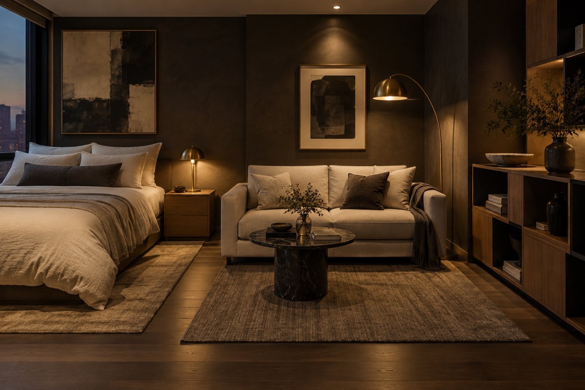

設計 Guideline
NestCraft 輕奢高定風的色彩、字級、間距與元件規範。頁面上的數值對應 _variables.scss 與 _base.scss，改色或改間距時，兩邊要同步。
概覽
NestCraft 夜間展間：把家具店想成打烊後只為你開燈的精品展間。每件家具像一件展品，被一盞暖光聚焦；文字像展品旁的展示牌，安靜、留白多、細線分隔，金色只留給少數重點。
- 風格定位
- 輕奢高定風
- 色系搭配
- 深色系 ＋ 暖金黑（曜石黑、香檳金、暖白）
- UI 視覺特點
結帳卡片金屬反光質感，金流付款按鈕帶燙金邊框。
- 品牌
- 專為租屋族與小資家庭設計的模組化家居電商，主打「靈活收納、小坪數友善」。
以上文字引用自課程規格文件。
課程規格的三個要求
每一項右側都是實際的元件，與結帳頁使用同一組類別。
深色系＋暖金黑
曜石黑、香檳金、暖白
頁面是帶暖褐的曜石黑，卡片、輸入框等浮起的面用胡桃墨，區塊底用燻木，三層都偏暖，不用中性的 #111。文字用暖白三階；香檳金只出現在主要按鈕、目前頁、焦點環，展示牌與商品卡的細線用暗一階的古金。
查看色彩規範- 曜石黑
- 胡桃墨
- 燻木
- 暖白
- 香檳金
結帳卡片的金屬反光
.order-summary.is-metal
只有結帳頁的訂單摘要做成香檳拉絲金屬卡（桌機右欄的固定卡片，與手機表單上方可展開的摘要列）：金屬漸層疊上細拉絲紋，載入後一道斜向反光掃過一次；文字用曜石黑，合計用 Bodoni Moda。購物車與付款結果的摘要維持深色版，金屬才會是結帳時的驚喜。
查看訂單摘要付款按鈕的燙金邊框
.foil
結帳頁的付款方式選項與「確認付款」按鈕加上 .foil：1px 邊框露出亮暗交錯的金色漸層，像燙金壓印；選中時再加一圈香檳金與柔光，內底換成金紗。燙金只用在結帳。
設計原則
- 一盞燈，一件展品
- 每一頁只有一個視覺重點。大膽只花在結帳的金屬卡與燙金框，其他頁面保持克制：不加進場動畫、不做 hover 浮起、不放裝飾用的漸層。
- 金色是點綴
- 香檳金用在主要按鈕、目前頁、焦點環，細線用暗一階的古金；標題與內文用暖白系；內容清單前的線條圖示（四大堅持、服務說明、會員福利、付款方式）用香檳金點一下，表單提示、配送備註這類小圖示用古金，選單與頁首的功能圖示用暖白或霧白。金色一多，就不再是重點。
- 展示牌式的資訊
- 商品是展品，文字是展品旁的說明牌：一條古金細線、襯線品名、尺寸線
.dim標出 W × D × H，最後才是價格與按鈕。 - 深色也要看得清楚
- 文字對底色至少 4.5:1，表單框線與焦點至少 3:1。Bootstrap 的下拉箭頭、核取方塊、關閉鈕與停用狀態都已改成深色版，直接用類別即可。
頁面與共用區塊
- 每一頁都是一份完整的 HTML，用
<a href="products.html">這類相對連結換頁；商品詳情只有一頁product.html。 - 頁首、頁尾在每一頁都完整寫一份。要改時先改
templates/page.html，再把同一段貼到每一頁，最後執行npm run check，確認每一頁的<head>、頁首、頁尾都與範本一致。 - 價格、尺寸、品名等假資料直接寫在 HTML。同一件商品會出現在商品卡、商品詳情、購物車與訂單，改資料時要一起改。
- 樣式寫在
scss/，改完執行npm run css編譯成css/style.css；互動只用 Bootstrap 的data-bs-*屬性與js/main.js（手機搜尋列聚焦、顯示密碼、分頁籤捲進畫面、我的訂單的狀態篩選）。 - 本風格新增的共用類別寫在
_base.scss：拱門圖框.arch、展示牌.placard、燙金邊框.foil；金屬卡片.order-summary.is-metal寫在components/_order-summary.scss。各頁不要另寫一份。
色彩
曜石黑為底、暖白寫字、香檳金點綴。三層深色只差一點明度，靠細線分出邊界；金色用得越少，越有精品感。
對比度依 WCAG 公式計算，未特別註明時是對頁面底色「曜石黑」的比值。文字需達 4.5:1（AA），邊框、焦點等非文字元素需達 3:1。色塊與下方的 hex 分別寫在 _guideline.scss 與本頁的 HTML，改 _variables.scss 的色票時要一起更新。
面
由深到淺三層，都帶一點暖褐。三層的對比只有 1.1–1.2:1，浮起的面要靠古銅線或古金線畫出邊界，不靠陰影。
曜石黑
$obsidian
#16130F
頁面底色（$body-bg）、金色按鈕與狀態標籤上的字、<meta name="theme-color">
胡桃墨
$walnut
#201B15
浮起的面：卡片、輸入框、下拉選單、頁首、頁尾、深色版訂單摘要
燻木
$smoke
#2A241D
區塊底 .section-alt、.bg-light、hover 底（$body-secondary-bg）
線條
所有分隔都是 1px。古銅線與深古銅是裝飾線，不承載資訊；輸入框、核取方塊這類表單控制項要看得清邊界，才用表單框線。
古銅線
$line
#3D352B
預設髮絲線（$border-color）：分隔線、表格線、區塊之間的線
1.5:1 裝飾用
深古銅
$line-strong
#5A4E3F
較明顯的分隔、虛線框、停用的框線、麵包屑的「/」
2.3:1 不可作文字
表單框線
$control
#7A6C58
輸入框、下拉選單、核取方塊、數量框、尺寸線
3.6:1 對胡桃墨 3.4:1 對燻木 3.0:1 非文字 3:1
暖白
文字只用暖白三階，不用純白 #FFF：純白在深色底上太刺眼，也和暖褐的面不搭。
暖白
$ivory
#F1EADC
主文字、標題、連結
15.5:1 對燻木 12.8:1 AAA
霧白
$ivory-muted
#B9AE99
次要文字、說明、表單說明（secondary）；「已售完」的標示與價格
8.4:1 對燻木 7.0:1 AAA
淡霧白
$ivory-faint
#948A78
輸入框 placeholder、分頁籤的數量、最弱的說明
5.4:1 對胡桃墨 5.0:1 對燻木 4.5:1 AA
香檳金
金色只用在少數重點：主要按鈕、目前頁、焦點環、金屬卡片與燙金框。古金是裝飾線用的暗金，小字不要放在燻木上；金紗是選中選項的內底。
香檳金
$champagne
#D3B98B
主要按鈕底（primary）、強調文字、連結 hover、目前頁的底線、焦點環
9.8:1 上面放曜石黑字 9.8:1 AAA
淺香檳
$champagne-light
#E6D3AE
主要按鈕 hover、金屬高光、暗底燙金按鈕的字
12.6:1 AAA
古金
$champagne-deep
#A88C5C
裝飾線：展示牌、商品卡的細線、深色訂單摘要的外框、文字按鈕的底線；金屬暗部
5.8:1 對燻木 4.8:1 AA
金紗
$champagne-veil
≈ #322B21
選中的燙金選項內底：mix($champagne, $walnut, 10%)
上面放暖白字 11.7:1 AAA
狀態
降低彩度的寶石色，在深色底上都超過 7:1，可以直接當文字。做成實心標籤或按鈕時，上面的字是曜石黑。
翡翠
$jade
#9CC3A4
成功、驗證通過、已完成
9.5:1 AAA
石榴
$garnet
#E8998C
錯誤、刪除
8.3:1 AAA
銅橘
$copper
#DFA274
提醒：待付款標籤、付款期限、低庫存
8.4:1 AAA
鋼藍
$steel
#A3B8CC
資訊、已付款
9.1:1 AAA
燙金與金屬
全站只有這兩種漸層，都只用在結帳頁。色塊是漸層本身；實際使用時，燙金只從 1px 邊框露出來，金屬卡片再疊上細拉絲紋與一次性的反光。
燙金
$foil-gradient
115 度：古金 → 淺香檳 → 燙金暗部 $foil-shadow（≈ #846E49）→ 香檳金 → 淺香檳 → 古金。用在 .foil 的邊框
金屬
$metal-gradient
135 度：古金只在左上角一小段，其餘在香檳金與淺香檳之間。用在 .order-summary.is-metal
金屬次要字
$metal-ink-muted
#433726
金屬卡片上的次要文字；主文字 $metal-ink 就是曜石黑。不放在左上角的古金暗部
對香檳金 6.1:1 對淺香檳 7.9:1 AA
Bootstrap theme color 對應
在 $theme-colors 中改寫，所以 .btn-*、.text-*、.bg-*、.alert-* 都會自動換成這組顏色。按鈕與標籤上的字色由 Bootstrap 依底色自動挑選（$color-contrast-light 暖白、$color-contrast-dark 曜石黑），香檳金與狀態色上都會選到曜石黑。
| Theme | 對應變數 | 用途 |
|---|---|---|
primary$champagne |
$champagne |
主要按鈕、核取方塊已選、分頁目前頁、焦點環 |
secondary$ivory-muted |
$ivory-muted |
次要文字 .text-secondary；「已售完」 |
success$jade |
$jade |
驗證通過、付款完成 |
info$steel |
$steel |
配送與流程說明 |
warning$copper |
$copper |
提醒（待付款、付款期限、低庫存）；深色底上可直接當文字 |
danger$garnet |
$garnet |
錯誤、刪除 |
light$smoke |
$smoke |
深色主題裡「亮一階的面」：.bg-light、.table-light |
dark$obsidian |
$obsidian |
最深的面：.bg-dark、.btn-dark |
語意變數
$body-bg$obsidian$body-color$ivory$body-secondary-color$ivory-muted$body-tertiary-color$ivory-faint$body-secondary-bg$smoke$border-color$line$card-bg、$dropdown-bg$walnut$input-bg$walnut$input-border-color$control$input-placeholder-color$ivory-faint$input-focus-border-color$champagne$focus-ring-color$champagne$link-color$ivory$link-hover-color$champagne$component-active-bg$champagne$component-active-color$obsidian$color-contrast-light$ivory$color-contrast-dark$obsidian
單一深色主題
- 不使用
data-bs-theme，也不輸出 Bootstrap 的 dark mode 變數（$enable-dark-mode: false）。原本給淺色用的$body-bg、$input-bg、$dropdown-bg、$modal-content-bg等變數直接設成深色，整套元件編譯出來就是深色。 - 各頁直接用 Bootstrap 的類別即可，不要在頁面的 SCSS 裡再把表單、下拉選單、對話框改成深色。
:root設定color-scheme: dark與accent-color香檳金，瀏覽器原生的捲軸、日期選擇器、下拉清單也是深色；<meta name="theme-color" content="#16130F">讓手機瀏覽器的網址列一起變成曜石黑。- 深色底上容易看不見的地方都已調整：關閉鈕 X 是暖白、下拉箭頭是霧白、核取方塊的勾勾與 radio 的圓點是曜石黑（在香檳金底上）、placeholder 是淡霧白、停用時是透明底加深古銅框。
- 不用
.text-white、.bg-white、.text-black：純白與純黑不在色票內。
字級階層
標題用襯線、內文用無襯線。字重只用 300／400／500，層級靠字級與留白拉開，不靠粗體或換顏色。
字體家族
NestCraft 20,250
Regular 400 Medium 500
Bodoni Moda
英數襯線：品牌字、標題裡的英數、大金額。可變字型會依字級調整筆畫粗細（optical size 6–96）；大金額例外，固定用光學尺寸 18，見下方「數字與金額」。
夜間展間
中等 500
Noto Serif TC
中文襯線：h1–h6、展示牌品名、引言。Bodoni Moda 沒有的中文字會落到這套字體。
靈活收納，小坪數友善
細體 300 常規 400 中等 500
Noto Sans TC
無襯線：內文、表單、按鈕、小字，以及清單裡的小金額。
$font-family-serif："Bodoni Moda", "Noto Serif TC", "Songti TC", "PMingLiU", serif
$font-family-sans-serif："Noto Sans TC", "PingFang TC", "Microsoft JhengHei", system-ui, sans-serif
- h1–h6、
.h1–.h6、.display-*自動使用襯線；不是標題的元素要用襯線（引言、展示牌品名）時加.font-serif。 - 不用斜體（沒有載入 Bodoni Moda 的斜體）、不用全大寫、不用等寬字體當資料標籤。
字級表
表列為 1200px 以上的尺寸。大於 20px 的字級（display、h1–h3）在 1200px 以下由 Bootstrap RFS 依視窗寬度自動縮小。標題一律加 text-wrap: balance，多行時平均分配。
.display-1
- 72px／4.5rem
- 字重 500
- 行高 1.3
- 字距 .06em
夜間展間
.display-2
- 64px／4rem
- 字重 500
- 行高 1.3
- 字距 .06em
夜間展間
.display-3
- 56px／3.5rem
- 字重 500
- 行高 1.3
- 字距 .06em
夜間展間
.display-4
- 48px／3rem
- 字重 500
- 行高 1.3
- 字距 .06em
夜間展間
.display-5
- 40px／2.5rem
- 字重 500
- 行高 1.3
- 字距 .06em
夜間展間
.display-6
- 36px／2.25rem
- 字重 500
- 行高 1.3
- 字距 .06em
夜間展間
h1
- 40px／2.5rem
- 字重 500
- 行高 1.45
- 字距 .06em
頁面標題，每頁一個。商品詳情的 h1 是完整品名，改用 .h2 尺寸並加 .text-phrase（見下方「標題與品名的換行」）
把有限的坪數，活出無限的講究。
h2
- 32px／2rem
- 字重 500
- 行高 1.45
- 字距 .06em
區塊標題
專為小日子設計的四大堅持
h3
- 24px／1.5rem
- 字重 500
- 行高 1.45
- 字距 .06em
子區塊標題
靈感提案｜
h4
- 20px／1.25rem
- 字重 500
- 行高 1.45
- 字距 .06em
訂單摘要、卡片群組標題
人氣嚴選｜
h5
- 17px／1.0625rem
- 字重 500
- 行高 1.45
- 字距 .06em
清單項目標題
橡木餐桌
h6
- 15px／.9375rem
- 字重 500
- 行高 1.45
- 字距 .06em
表單群組、頁尾欄位標題
收件資訊
.lead
- 18px／1.125rem
- 字重 300
- 行高 1.85
- 字距 .03em
首屏標題下的一段說明
專為租屋族與小空間打造的模組家具。
.page-lead
- 16px／1rem
- 字重 400
- 行高 1.85
- 字距 .03em
頁首說明：霧白、最寬 36em。.section-heading 的說明同樣式
從沙發、餐桌到收納，找到放得下、也帶得走的家具。
內文
- 16px／1rem
- 字重 400
- 行高 1.85
- 字距 .03em（0.48px）
商品介紹、段落
嚴選北美 FAS 級白橡木打造，保留天然溫潤的木紋肌理與原木觸感。寬敞的桌面設計搭配倒角安全收邊，穩固的實木桌腳提供優異的承重力，為您的餐廳空間注入自然質樸的北歐氣息，是與家人朋友共享美好時光的完美選擇。
.text-note
- 13px／.8125rem
- 字重 400
- 行高 1.85
- 字距 .08em
註記、表單說明、圖說。小字的字距放寬，在深色底上才不會糊成一片
滿 NT$ 3,000 免運，大型家具出貨前會先來電約定時間。
數字與金額
大金額用 Bodoni Moda 的襯線數字；清單裡的小金額、數量、日期與訂單編號用 Noto Sans TC 的等寬數字，上下對齊更整齊。小於 20px 的金額用 .price，不用 .amount。
.amount大金額- NT$ 16,800
.price價格- NT$ 16,800
.dim尺寸- W160 × D80 × H75 cm
.num訂單編號- NC-20260923-001
- 金額靠右對齊
-
- 橡木餐桌
- NT$ 16,800
- NestBox 自由拼裝
收納方塊 (三入組) × 2 - NT$ 2,560
- SlimFit 夾縫
多功能推車 - NT$ 890
- 小計
- NT$ 20,250
.amount不帶字級，由所在位置決定，例如<p class="amount h2">。用在商品詳情的售價、訂單合計、金屬卡片上的金額。.amount與訂單摘要的合計金額（.order-summary-total）在共用樣式裡固定 Bodoni Moda 的光學尺寸 18（font-variation-settings: "opsz" 18）。光學尺寸跟著字級走時，28px 以上的千分位逗號會細得像句點；固定後「16,800」的逗號才看得出來。頁面不用、也不要再寫font-optical-sizing或font-variation-settings。- 訂單編號放在標題裡時（例如我的訂單），包一層
span.num：Bodoni 的連字號很細、數字是展示字形，改用無襯線比較好讀。
標題與品名的換行
標題已設定 text-wrap: balance，多行時平均分配；p、li、dd、label 與 .form-text 用 text-wrap: pretty，避免最後一行只剩一個字。品名另外要求：不從詞中間拆開。
NestBox 自由拼裝
日暮亞麻｜
.text-phrase：只在空白與斷點換行NestBox 自由拼裝
日暮亞麻｜
虛線是欄寬邊界。示範欄寬 10rem，約等於手機 2 欄商品卡的標題寬度。
- 商品詳情的 h1 是完整品名，寫成
<h1 class="h2 text-phrase">：保留 h1 的文件結構，字級用 h2 的 32px（1200px 以下由 RFS 縮小），長品名不會佔掉半個首屏。 - 斷點寫在 HTML：長品名與情境標題在詞組之間插入
<wbr>，例如「自由拼裝<wbr>收納方塊」「懸浮感<wbr>洞洞板<wbr>壁面收納組」。畫面上看不到，文案仍然逐字；不要改成一般空白。 - 加上
.text-phrase（word-break: keep-all＋overflow-wrap: anywhere）後，只在空白與這些斷點換行，「收納方塊」「(三入組)」這類詞組不會被拆開；單一詞組比欄寬還長時，才會強制斷行。 - 商品卡標題
.product-card-title與訂單摘要的品名已內建同樣的規則，不用再加類別。商品詳情 h1、情境圖小卡、區塊標題等其他地方的品名與短標題，要自己加.text-phrase。 - 不要用在長段落：中文只剩空白與標點可以換行，商品介紹這類段落的行尾會參差不齊，窄欄時還會留下大段空白。
間距
以 1rem = 16px 為基準，並把 Bootstrap 的 spacer 擴充到 8 階。p、m、gap 工具類別都能使用 0–8。精品展間的留白要大方：區塊上下留到 96–128px。
區塊節奏
.section上下留白- 64px（spacer 6），992px 以上 96px（spacer 7），1200px 以上 128px（spacer 8）
.section + .section- 相鄰兩個區塊之間自動有一條古銅髮絲線；
.section-alt換成燻木底 .section-heading- 標題靠左，與說明相距 8px（spacer 2），與內容相距 48px，992px 以上 64px
- 卡片內距
- 24px（
$card-spacer-x／y: 1.5rem）；訂單摘要 1200px 以上 32px - 格線 gutter
- 32px（
$grid-gutter-width: 2rem）；密集列表可用.gx-3、.gx-4收緊 - 容器左右內距
- 各 20px（
$container-padding-x: 2.5rem，左右各取一半）；需大於等於 gutter，.row才不會溢出 - 容器最大寬
- 1280px（1400px 以上）
- 頁首高度
- 77px（
$site-header-height: 4.8125rem）：$navbar-padding-y上下各 16px、44px 圖示按鈕與底線，所有寬度相同，不含上方公告列 - sticky 位移
- 101px（
$sticky-top-offset，頁首再加 24px）。側欄、目錄、訂單摘要等 sticky 元素的 top，以及 html 的scroll-padding-top都用這個值，點同頁錨點時，目標會停在頁首下方。 - 頁尾上方
- 64px（spacer 6），992px 以上 96px（spacer 7）
頁首節奏
首頁以外的每一頁，頁首都用 .page-header 包住麵包屑（或結帳步驟）、h1 與一句說明，切換頁面時標題會停在同一個位置。各頁不要另外設定頁首間距。
- 頁首 → 麵包屑
- 24px，992px 以上 48px
- 麵包屑或步驟 → h1
- 24px，992px 以上 48px
- h1 → 說明
- 8px；說明用
.page-lead，霧白、最寬 36em - 說明 → 內容
- 48px，992px 以上 64px
- 麵包屑
aria-label="目前位置"；第一項是「首頁」，最後一項是目前頁，加.active與aria-current="page"，不做成連結。商品詳情的最後一項用簡短品名。每一項都不斷行（.breadcrumb-item已內建nowrap），放不下時整項移到下一行。連結已內建 44px 觸控高度。- 結帳流程
- 購物車、結帳、付款結果三頁以結帳步驟
.checkout-steps取代麵包屑，放在 h1 之前。
圓角與陰影
直角、細線、幾乎不用陰影，剪裁俐落才像高訂。全站唯一的弧線是拱門，唯一的光澤是結帳的金屬卡片。
圓角
.rounded 0
$border-radius
預設，全站一律直角：按鈕、輸入框、卡片、提示、標籤、Modal、核取方塊

.arch 拱門
$border-radius-pill 上緣
全站唯一的形狀母題，像旅店的拱廊。只用在首頁主視覺與登入、註冊頁的圖片
圓形 50%
.rounded-circle
只有小圓點是圓的：radio 與開關的圓鈕、狀態標籤的圓點、首頁情境圖的熱點、配送進度的節點
$border-radius-sm、$border-radius-lg、$border-radius-xl、$border-radius-xxl都設為 0，.rounded-1～.rounded-5也是直角。- 不用
$enable-rounded: false：那會連 radio 的圓形一起拿掉。開關（.form-switch，商品一覽的「只顯示有現貨的商品」）沿用 Bootstrap 的圓角軌道，圓鈕才有滑動的樣子。 .arch預設比例 4:5，可以用頁面的 class 改aspect-ratio；不要再加max-height，否則寬度會被卡住，大螢幕上圖片不會填滿欄寬。
陰影
$enable-shadows: false，Bootstrap 元件不會自動產生陰影。深色底上的陰影要很深才看得出來，所以只留給浮在頁面上方的東西：下拉選單與 Modal 已在 _base.scss 預設加上，金屬卡片自帶陰影；卡片、區塊一律不加。
$enable-shadows: false
none
卡片、商品卡、區塊：用古銅線或底色分層
$box-shadow-sm
0 1px 2px rgba(#000, .4)
保留給貼近底面的小元件，目前頁面沒有使用
$box-shadow
0 12px 32px rgba(#000, .45)
下拉選單（已預設）。情境圖熱點浮出的商品小卡就是下拉選單，不另外加
$box-shadow-lg
0 24px 64px rgba(#000, .55)
Modal（已預設）等最上層的浮層
邊框
古銅線 $line
預設。卡片、表格、分隔線 .rule、分頁籤底線、區塊之間的線。
深古銅 $line-strong
較明顯的分隔、停用的框線、未到的結帳步驟、商品卡售完時的細線。
表單框線 $control
表單控制項：輸入框、下拉選單、核取方塊、數量框。對曜石黑 3.6:1、對胡桃墨 3.4:1。
古金細線 $champagne-deep
展示牌的細線：.placard、商品卡圖片下方、深色訂單摘要的外框、已完成的結帳步驟。
燙金 .foil
漸層邊框，只用在結帳頁的付款方式選項與「確認付款」按鈕。
虛線 dashed
表示「不再有效或不可選」：已取消的訂單標籤、停用的配送選項。另用在「設計稿狀態示意」.demo-state 的分隔線與示範框，標出不是正式畫面。
動態
- 全站唯一的裝飾動畫是金屬卡片的反光：載入後 0.4 秒，一道斜向亮帶花 1.6 秒掃過卡片，只跑一次。
- 互動回饋可以有 0.15–0.3 秒的短轉場：按鈕換色、燙金選項的光暈、手機搜尋列展開、商品卡圖片在滑過時微微變亮（像把燈調亮，不放大）。
- 不加進場動畫、捲動視差，卡片滑過時不浮起、不放大。
- 系統設定「減少動態效果」（
prefers-reduced-motion: reduce）時，反光不播放，轉場時間縮到幾乎為 0。
元件狀態規範
滑過與鍵盤焦點用 .gl-is-hover、.gl-is-focus 強制呈現，讀取的是 Bootstrap 按鈕的 hover 與 focus 變數（--bs-btn-hover-*、--bs-btn-focus-box-shadow），與真實互動一致。
按鈕
.btn-primary
主要動作：香檳金底＋曜石黑字（9.8:1），hover 換成淺香檳。同一組動作（一個表單、一個面板、一張卡片）只放一個。
預設 default
滑過 hover
按下 active
鍵盤焦點 focus
停用 disabled
.btn-primary.foil
燙金主要按鈕：香檳金底再加一圈燙金漸層框，像打磨過的斜角。只用在結帳頁的「確認付款」（.btn-lg）：手機在表單最後，桌機在金屬卡片裡。
預設 default
滑過 hover
按下 active
鍵盤焦點 focus
停用 disabled
.btn.foil
燙金暗底按鈕：曜石黑底＋淺香檳字（12.6:1）＋燙金框。金屬卡片裡的「確認付款」就是這個樣子，.is-metal 會自動把 .btn-primary.foil 換成暗底。
預設 default
滑過 hover
按下 active
鍵盤焦點 focus
停用 disabled
.btn-outline-secondary
次要動作：透明底＋暖白細框，hover 反白成暖白底。商品卡的「加入購物車」、商品詳情與「直接購買」並列的「加入購物車」、購物車折扣碼的「套用」、篩選。停用時字改霧白、框改深古銅，不再疊透明度，「已售完」才看得清楚。
預設 default
滑過 hover
按下 active
鍵盤焦點 focus
停用 disabled
.btn-outline-primary
香檳細框：需要一點金色指引、但不是一組動作中主要動作的按鈕，只用在首頁「人氣嚴選」的「閃電結帳」（一列四張卡如果都是實心金色，金色就不再是重點）。「加入購物車」「再買一次」這類把商品放進購物車的動作一律用暖白細框。
預設 default
滑過 hover
按下 active
鍵盤焦點 focus
停用 disabled
.btn-text
文字連結型：暖白字＋古金底線，hover 換成香檳金。繼續購物、返回購物車、移除。已內建 44px 觸控高度。
預設 default
滑過 hover
按下 active
鍵盤焦點 focus
停用 disabled
尺寸
.btn-sm 高 44px
預設 高 54px
.btn-lg 高 64px
圖示在文字左側，間距 4–8px
.btn-text 高 44px（內建）
- 三種尺寸都達到 44px 觸控目標。
.btn-sm用在卡片、列表等密集區域（商品卡、情境圖熱點小卡、我的訂單），與相鄰按鈕保持 8px 以上間距；.btn-lg只用在首頁底部的行動呼籲與結帳的「確認付款」。 .btn-text已內建inline-flex與min-height: 44px，文字垂直置中，看起來仍是一行文字連結。使用時直接寫class="btn btn-text"，不要再加py-*、min-height或自訂 padding。- 按鈕文字不加箭頭（→），圖示只在能幫助辨認時才放，例如篩選、貨到通知我、閃電結帳、移除。
鍵盤焦點
- 只在鍵盤操作時出現（
:focus-visible），滑鼠點擊不留外框。一律是實色香檳金$champagne（對曜石黑 9.8:1），不用半透明光暈。 - 全站預設：2px 香檳金外框，與元素相距 2px，露出的底色就是間隙。Bootstrap 的
$focus-ring-color也設為$champagne，頁首導覽連結、搜尋框、漢堡選單按鈕都是同一個顏色。 - 按鈕：先留 2px 曜石黑間隙，再畫 2px 香檳金外圈（
$focus-ring-double）。香檳金按鈕旁邊有一圈黑，焦點環才不會和按鈕本身黏在一起；六種按鈕一致，見上方「鍵盤焦點 focus」一欄。 - 輸入框、下拉選單：1px 邊框換成香檳金，外加 1px 香檳金（
$input-focus-box-shadow），合成 2px 實線框，見下方「表單」的「焦點 focus」。 - 核取方塊、單選：和按鈕相同的雙環（
$form-check-input-focus-box-shadow）。 - 金屬卡片上的焦點改成曜石黑：香檳金在金屬上看不見。
- 分頁籤與數量框的輸入欄：焦點畫在內側，不會被橫向捲動的容器裁掉。
- 不被頁首擋住：html 設
scroll-padding-top: $sticky-top-offset，Tab 到被捲到頂端的元素時，會停在 sticky 頁首下方。 - 同頁錨點（本頁目錄、商品詳情的「閱讀完整介紹與規格」、頁首的「跳至主要內容」）：瀏覽器捲到目標後，下一次 Tab 從目標區塊繼續。目標加了
tabindex="-1"時（例如<main>）會取得焦點，這種焦點不畫外框。
觸控目標
- 可以點的東西至少 44 × 44px，看起來小的元件用
min-height、min-width或內距補足，不放大字級。 - 已內建：三種按鈕尺寸、
.btn-text、數量框的加減鍵、麵包屑連結、.nav-underline分頁（最小寬 44px）、結帳步驟.checkout-steps每一步（手機只剩方塊時也是 44 × 44px）、頁首圖示按鈕、頁尾連結。 - 頁尾還沒設計的頁面寫成不帶
href的<a>：不能點、不能 Tab 到，也不會像href="#"那樣跳回頁面頂端。
表單
每個欄位都有看得見的標籤。說明與錯誤訊息用 aria-describedby 連到欄位。輸入框是胡桃墨底、表單框線 $control（對胡桃墨 3.4:1）；placeholder 用淡霧白（對胡桃墨 5.0:1），只寫範例格式，不取代標籤。
- 選填：標籤文字後面加
span.form-label-optional，內容只寫「選填」，不加括號。與標籤相距 8px，13px 霧白。全站的選填欄位（購物車的折扣碼、結帳的備註）都用這個類別，不要各頁自己寫樣式。 - 必填不另外加星號；表單開頭用一句話說明，例如結帳頁的「除了標示『選填』的欄位，其他都需要填寫」。
- 停用：沒有底色、深古銅框、淡霧白字，看起來像「退回頁面」。瀏覽器自動填入時維持胡桃墨底，不會變成淺藍。
預設 default
焦點 focus
出貨前會用這支電話和你約配送時間。
通過 is-valid
格式正確，訂單確認信會寄到這裡。
錯誤 is-invalid
手機號碼需要 10 碼數字，例如 0912 345 678。
停用 disabled
目前只配送台灣本島。
下拉選單 select：箭頭是霧白
多行文字 textarea ＋ 選填標示 ＋ 說明 form-text
需要搬運大型家具時，可以在這裡註明樓層與有無電梯。
關閉鈕 btn-close：暖白 X
對話框、側邊抽屜與手機篩選面板的關閉鈕。右邊是停用狀態。
品名與尺寸
品名與尺寸在每一頁都用同一種寫法，不各自改寫；品名逐字沿用課程文件。
品名
- 完整品名：商品卡、商品詳情 h1、購物車品項、訂單摘要、情境圖熱點小卡、我的訂單。
- 簡短品名：只用在商品詳情的麵包屑；沒有簡短品名的商品用完整品名。訂單摘要這類窄欄也用完整品名，靠換行規則處理。
- 長品名在 HTML 裡用
<wbr>標出斷點，搭配.text-phrase只在空白與斷點換行，見「字級階層」的「標題與品名的換行」。
| 完整品名 | 簡短品名 |
|---|---|
| NestBox 自由拼裝 |
NestBox 自由拼裝 |
| 日暮亞麻｜ |
日暮亞麻｜ |
| 懸浮感 |
懸浮感 |
尺寸
- W160 × D80 × H75 cm
- 單入 W35 × D35 × H35 cm
- 單片底板 W60 × D2 × H60 cm
- 沙發模式 W150 × D85 × H80 cm
- 床鋪模式 W150 × D190 × H40 cm
- 全站同一種格式：商品卡、商品詳情的尺寸圖、購物車品項、情境圖熱點小卡都照上方的範例寫，不自行簡寫。尺寸線
.dim-line用表單框線色，像建築圖的標註。 - 乘號用「×」並前後各空一格，單位 cm 放在最後。這些空格要寫成不換行空白
，只有限定詞後面可以換行（「沙發模式」／「W150 × D85 × H80 cm」），行尾不會吊著一個「×」。 - 價格與尺寸對應的數量不同時，把限定詞放在最前面，例如「單入」「單片底板」。
- 有兩種使用狀態的商品逐行列出，每行以模式名稱開頭；商品卡只顯示第一種。
- 唯一例外：商品詳情「規格」分頁的「尺寸」列，直接照抄課程文件（Notion）的原文，限定詞的位置與括號都照原文。
- 全站格式
- 單片底板 W60 × D2 × H60 cm
- 規格表原文
- W60 × D2 × H60 cm (單片底板)
同一件商品：懸浮感
數量、訂單狀態與庫存
數量增減
.qty：胡桃墨底，外框與輸入框相同的表單框線，加減鍵各 44 × 44px。
一般
已售完：整組停用，外框改為深古銅
售完時的按鈕
商品卡：唯一的按鈕停用並改寫「已售完」。商品詳情：「加入購物車」停用並改寫「已售完」，主要按鈕換成「貨到通知我」，展開 Email 欄位登記補貨通知，讓使用者還有下一步。
商品詳情：售完時的兩顆按鈕
庫存標示
門檻是 10 件：商品詳情與本頁用同一個數字，改門檻時兩頁一起改。文字與圖示同色，寫法同商品詳情的庫存提示。
- 有庫存，付款後 48 小時內出貨 庫存 10 件以上：翡翠
- 剩 5 件 1–9 件：顯示實際數量，用銅橘提醒
- 已售完，預計 3–4 週後補貨 0 件：霧白，不用警示色；商品圖調暗並標示「已售完」，數量框停用
訂單狀態
.badge-status：5 種狀態除了顏色，外框也不同。待付款需要你處理，做成最醒目的實心；已取消用虛線框與空心圓點。
- 待付款實心銅橘＋曜石黑字。訂單已成立，尚未收到款項；同時寫出付款期限
- 已付款鋼藍細框＋實心圓點。已收到款項，正在備貨
- 出貨中香檳金細框＋實心圓點。已交給物流，大型家具會先來電
- 已完成翡翠細框＋實心圓點。已送達並簽收
- 已取消霧白虛線框＋空心圓點。訂單已取消，不會扣款；同時寫出取消日期
配送進度沿用同一組用語：已付款 → 備貨中 → 出貨中 → 已完成。「備貨中」只是進度節點，不是訂單狀態，也不出現在篩選分頁籤。
導覽
.nav-underline 我的訂單的狀態篩選：目前分頁是暖白字＋香檳金細底線
- 同一個樣式有三種寫法，依用途選：
- 會切換下方內容的分頁（商品詳情的「商品詳情／規格／評價」）：
ul加role="tablist"，按鈕加role="tab"、aria-selected與aria-controls，用 Bootstrap 的data-bs-toggle="tab"切換。 - 只篩選同一份清單（我的訂單的狀態）：按鈕加
aria-pressed，如上方示範；選中的按鈕不用aria-current。 - 換到另一頁的分類（商品一覽的分類標籤）：寫成連結
a.nav-link，目前分類加.active與aria-current="page"，見「RWD 斷點」的「手機的橫向捲動列」。
- 會切換下方內容的分頁（商品詳情的「商品詳情／規格／評價」）：
- 每一項都包在
li.nav-item裡。高度 44px 以上；只有兩個字的分頁（「規格」「評價」）也保有 44px 最小寬度。放不下時橫向捲動，手機加.bleed-x貼齊螢幕兩側。 - 數量接在文字後面，用
span.tab-count（例如評價則數、各分類的商品數），淡霧白、不加括號。 - 頁首導覽的目前頁同樣是暖白字＋香檳金細底線；手機展開的選單裡，目前頁改成香檳金字。
.breadcrumb 連結霧白、分隔符號「/」深古銅，目前頁暖白、不是連結
.pagination 目前頁為香檳金實心＋曜石黑字
提示訊息
先說結果，再說下一步。不用驚嘆號，不責怪使用者，也不用錯誤代碼。深色版的提示是胡桃墨混入一點狀態色的底、提亮的狀態色字，框線同色系。
付款完成
訂單 NC-20260923-001 已成立，確認信已寄到你的信箱。
大型家具採預約配送
出貨前客服會先來電，和你確認送達時間與搬運動線。
有一件商品已售完
「藤編收納櫃」已從這次結帳移除，其他商品不受影響。
付款沒有完成
這筆交易沒有扣款。請確認卡號與有效期限，再試一次。
空狀態
列表沒有內容時，用一句話說明現況，再給一個能繼續下去的動作。不道歉、不放插圖或表情符號，也不留下空白的表格標題列。樣式用共用的 .empty-state，各頁不要另外寫。
整頁沒有內容：購物車是空的
購物車裡還沒有商品。
瀏覽商品一覽篩選後沒有結果：我的訂單
目前沒有待付款的訂單。
- 說明只寫事實，例如「購物車裡還沒有商品」「目前沒有待付款的訂單」，不寫「哎呀」「很抱歉」。
- 只放一個動作。整頁沒有內容時用主要按鈕帶去逛商品；篩選後沒有結果時用低強調按鈕，回到全部列表。
- 靠左對齊，起點與原本的列表相同；上方留 48px，不加框、不加底色。
- 設計稿用靜態畫面呈現這些狀態：放在頁面底部的「設計稿狀態示意」
.demo-state，以深古銅虛線和正式內容分開，標題寫明是哪一種情況（例如「購物車是空的時」「篩選後沒有訂單時」）。
共用元件
商品卡 .product-card：展示牌
不做外框、不加陰影。深色展間的展品照下方一條古金細線，接著是分類、襯線品名、尺寸、價格與按鈕。滑過圖片時像把燈調亮一點，不放大、不浮起。卡片依自身寬度調整版面（container query）：寬度 15rem 以下時，價格與按鈕上下排列、按鈕滿版，並隱藏尺寸線。
一般

已售完 .is-sold-out
閃電結帳 .is-express
窄卡：15rem 以下
- 一般：
btn-outline-secondary「加入購物車」，暖白細框，把金色留給主要動作。 - 已售完：
article加.is-sold-out，圖片調暗、圖片左上角標示「已售完」、細線改成深古銅、價格改霧白；按鈕停用並改寫「已售完」。 - 閃電結帳：
article加.is-express，只用在首頁「人氣嚴選」，價格一行、「閃電結帳」（Notion 文案）滿版在下方，直接連到checkout.html。按鈕用香檳細框（.btn-outline-primary）而不是實心：一列四張卡如果都是實心金色，金色就不再是「少數重點」。 - 完整品名已內建詞組換行。圖片和品名連到同一頁，圖片連結不進 Tab 順序、也不讓螢幕閱讀器再念一次。
- markup 直接複製上方示範。圖片與品名都連到
product.html（設計稿只有一頁商品詳情），長品名用<wbr>標出斷點。
展示牌 .placard
像展品旁的說明牌：一條古金細線，下面放襯線標題或一行小字。用在首頁主視覺的空間說明、登入與註冊頁的品牌語、商品詳情的情境圖說；商品卡的資訊區也是同一個樣子。
5 坪（約 16.5 m²）
首頁主視覺：只有標題 .placard-title
家不必大，剛好就好。
登入、註冊：拱門圖片下方的品牌語
陽光小套房：兼具在家辦公
商品詳情：情境圖的圖說，只有小字 .placard-text
.placard：上方 1px 古金細線，與內容相距 16px。當圖說時用figcaption。.placard-title：襯線 18px、字重 500、暖白，已內建詞組換行。.placard-text：13px 霧白，字距 .08em。- 標題與小字可以只放一種，兩種都放時標題在上。只寫一兩行，不放按鈕。
燙金邊框 .foil：付款方式
只用在結帳頁的付款方式選項與「確認付款」按鈕。原理是同一個元素疊兩層背景：上層是內底色（只鋪到 padding-box），下層是燙金漸層（鋪到 border-box），1px 的透明邊框就露出金色。
- 未選：胡桃墨內底＋燙金框；滑過換成燻木內底。選中（裡面的 radio 已勾選，或加
.active）：外加一圈香檳金與柔光，金邊看起來加粗，內底換成金紗。點上方的選項就能切換。 - 內底色由 CSS 變數
--foil-bg決定，必須是不透明的顏色，否則整塊都會透出金色。要換底色就改--foil-bg，不要寫background。 .foil會設定border與background；選項卡自己的 class（結帳頁的.co-option）只寫排版，不要再寫邊框與底色，否則會把金邊蓋掉。- 版面：上排左側香檳金大圖示、右側 radio；下排付款名稱（襯線 17px）與說明。手機也是兩欄，四個選項一屏看得完。
- 配送方式的選項不加
.foil：用安靜的深古銅細框，選中時框線提亮成霧白並加粗；不適用的「超商取貨」停用，改成虛線框並寫出原因。燙金只留給付款方式，兩組選項才分得出層次。
結帳步驟 .checkout-steps
放在 .page-header 內、h1 之前，取代麵包屑的位置。靠左橫排，直角方塊與文字同一行，數字用 Bodoni Moda，步驟之間以細線相連。這是有先後順序的流程，才使用數字編號。
第 1 步：購物車
第 2 步：填寫資料與付款
第 3 步：完成訂單
- 目前步驟：li 加上
.is-current與aria-current="step"，方塊為香檳金實心＋曜石黑數字，文字暖白。 - 已完成：li 加上
.is-done，方塊為古金細框＋香檳金勾勾，文字後面的.visually-hidden讓螢幕閱讀器念出「（已完成）」。在第 2 步時，「購物車」寫成連到cart.html的<a>，可以點回去修改；付款完成後不再提供返回，改用<span>。 - 未到：深古銅細框方塊、霧白數字，連接線用深古銅；已走過的連接線換成古金。
- 手機（576px 以下）只顯示目前步驟的文字，其餘步驟留下方塊；每一步的點擊範圍仍有 44 × 44px。
訂單摘要 .order-summary：深色版與金屬版
購物車、結帳、付款結果三頁共用同一套 markup，樣式寫在 _order-summary.scss。只有結帳頁加 .is-metal 變成香檳拉絲金屬卡；購物車與付款結果維持安靜的深色版。下方示範的寬度約等於 1440px 時的右欄。
結帳（桌機右欄）：.is-metal，品項 ＋ 金額列 ＋ 燙金按鈕
購物車：深色版，只有金額列，運費下方加補充說明
- 購物車
- 深色版。金額列（商品小計、運費與免運門檻、應付總額）→「前往結帳」→「繼續購物」。加
.is-sticky。 - 結帳
- 金屬版
.is-metal，桌機與手機都是。桌機在右欄：品項 → 金額列 →「確認付款」（.btn-primary.btn-lg.foil，在金屬上自動換成暗底）→「返回購物車」，加.is-sticky。992px 以下另有一張.is-metal放在表單上方，收合時是一條金屬列（「查看訂單明細」＋應付總額），按下用 collapse 展開品項與金額；「確認付款」移到表單最後，是香檳金底的燙金按鈕。 - 付款結果
- 深色版。訂單資訊列（編號、付款、配送、預計到貨）→ 品項 → 付款金額。是頁面的主要內容，外層用
section，不 sticky。
- 深色版：胡桃墨底、古金 1px 外框、直角，不加陰影；內距 24px，1200px 以上 32px。
- 金屬版：香檳金屬漸層疊上兩組細拉絲紋，上緣一道高光、下緣一道暗邊，內側再描一圈刻線；文字是曜石黑，次要文字
$metal-ink-muted。卡片裡的.btn-primary自動換成曜石黑底＋淺香檳字，.btn-text、連結與焦點環也改成金屬上看得清楚的顏色。頁面 SCSS 不要再改它的background、border、outline。 - 標題
.order-summary-title：頁面上是 h2（本頁示範降為 h4），字級用 h4 的 20px，與內容相距 24px。 - 品項：縮圖 64px 正方形；完整品名 14px，已內建詞組換行；數量在左、小計在右，不另佔一欄。
- 金額列
.order-summary-row：標籤靠左用次要色，數值靠右，列距 8px。補充說明.order-summary-note獨立一行靠左。 - 總額
.order-summary-total：上方一道細線，金額用 Bodoni Moda，深色版 28px、金屬版 32px。品項與金額列之間同樣以細線分開，上下各 16px。 .is-sticky：992px 以上固定在右欄，top 101px。螢幕較矮時品項清單先縮短、在清單內捲動（至少 120px），金額與按鈕維持看得到。
RWD 斷點
沿用 Bootstrap 預設斷點，只把最大容器改成 1280px。每頁都在 390、1440、1920px 三種寬度截圖檢查，再拖拉視窗經過 992 與 1200 這兩個版面切換的邊界。
- 斷點 xs 類別中綴 無 視窗寬度 < 576px 容器最大寬 100% 單欄為主；商品列表 2 欄；品牌字靠左、導覽收合為選單按鈕，會員入口移到選單內；橫向捲動列貼齊螢幕兩側；結帳步驟只顯示目前步驟的文字。
- 斷點 sm 類別中綴 -sm 視窗寬度 ≥ 576px 容器最大寬 540px 版型同 xs，容器改為置中；頁首右側出現會員圖示。
- 斷點 md 類別中綴 -md 視窗寬度 ≥ 768px 容器最大寬 720px 商品列表 3 欄；購物車出現欄位標題列；公告列顯示三則訊息；頁尾改為 3 欄。
- 斷點 lg 類別中綴 -lg 視窗寬度 ≥ 992px 容器最大寬 960px 頁首改成三段式：左側主導覽、正中央品牌字、右側搜尋框與圖示；篩選改為側欄；購物車與結帳摘要移到右側並 sticky；頁首上方 24 → 48px，區塊上下 64 → 96px。
- 斷點 xl 類別中綴 -xl 視窗寬度 ≥ 1200px 容器最大寬 1140px 區塊上下 96 → 128px；頁首搜尋框加寬；訂單摘要內距 24 → 32px；RFS 停止縮放，標題回到固定字級。
- 斷點 xxl 類別中綴 -xxl 視窗寬度 ≥ 1400px 容器最大寬 1280px 容器到達最大寬，更寬的螢幕只增加兩側留白；滿版的圖片與區塊底色仍延伸到視窗兩側。
驗收：390、1440、1920
- 沒有水平捲軸。最常見的原因是不換行的長字串（例如本頁的變數名稱、訂單編號）與負 margin 超出容器。
- 滿版區塊在 1920px 真的滿版：區塊底色、首頁主視覺與底部形象圖要延伸到視窗兩側。圖片同時設
aspect-ratio與max-height時，寬度會被高度卡住，大螢幕上兩側會露出空白，兩者擇一。 - 文字對齊版心：區塊標題、麵包屑、頁首主導覽的第一個連結，左緣都與
.container的內容起點對齊。 - 手機不擠壓：兩欄的商品卡、按鈕列、金額列都要能換行，金額不被切掉，觸控目標維持 44px。
- 深色底上的每一個文字與控制項都要看得清楚，也不能殘留淺色的底或框。
各頁的版型行為
- 頁首導覽
- 手機 品牌字靠左；右側為搜尋與購物車圖示（576px 以上加上會員）與選單按鈕，搜尋按放大鏡展開
- 平板 同手機
- 桌機 三段式：左側主導覽、正中央品牌字、右側搜尋框與圖示
- 商品列表
- 手機 2 欄；分類是橫向捲動的分頁籤，其餘篩選收進 offcanvas，按「篩選」開啟
- 平板 3 欄；篩選仍為 offcanvas
- 桌機 左側篩選欄 ＋ 右側 3 欄
- 購物車
- 手機 應付總額與「前往結帳」先列在清單上方；訂單摘要接在清單與折扣碼之後
- 平板 品項改為細線分隔的清單列，出現「商品／數量／小計」欄位標題列
- 桌機 清單 8 欄 ＋ 深色摘要 4 欄，摘要 sticky；清單上方的總額列隱藏
- 結帳
- 手機 表單上方是收合的金屬摘要列（查看訂單明細＋應付總額），按下展開品項；付款方式 2 欄；表單最後是應付總額與燙金的「確認付款」
- 平板 同手機；姓名與手機號碼並排
- 桌機 表單 7 欄 ＋ 金屬摘要 5 欄，摘要 sticky，「確認付款」移到金屬卡內；1200px 以上 8 ＋ 4，與購物車相同
- 我的訂單
- 手機 篩選分頁籤橫向捲動、貼齊螢幕兩側；訂單一列一筆，以細線分隔；會員選單接在訂單清單之後
- 平板 同手機；每筆訂單的品項與金額改為左右排
- 桌機 會員選單 3 欄 sticky ＋ 訂單 9 欄
- 出貨中的訂單會顯示配送進度，節點用語與訂單狀態一致：已付款 → 備貨中 → 出貨中 → 已完成。
- Guideline
- 手機 目錄改為頁首下方的橫向捲動列，捲動時固定在頂端
- 平板 同手機
- 桌機 左側固定目錄 ＋ 右側內容
手機的橫向捲動列
商品分類標籤、訂單篩選、首頁的空間情境卡與人氣嚴選，以及本頁的手機目錄，在 576px 以下都用 .bleed-x（或 @include bleed-x）：捲動列貼齊螢幕兩側，第一項仍對齊版心。不要各頁自己計算負 margin。
商品一覽的分類標籤：在手機上往右滑
- 作法：
margin-inline: -20px加上padding-inline: 20px，數值取自$container-padding-x的一半。 - 捲軸隱藏，所以右緣要讓最後一個看得見的項目被切到一半，或加上淡出，提示還能往右滑。
- 分頁籤之間，手機 1.5rem、768px 以上 2rem，已內建在
.nav-underline。
格線示意
12 欄格線。以下使用真實的格線類別，調整視窗寬度就能看到欄數變化。
.row-cols-2 .row-cols-md-3 商品列表
.col-lg-7 .col-xl-8 ＋ .col-lg-5 .col-xl-4 結帳
Do／Don’t 對照
標示「建議」的是推薦做法，標示「避免」的是應避免的做法；桌機左右並排，手機上下排列。範例都是真實的元件與類別。
金色只用在重點
每個按鈕、每個標題都是金色時，金色就不再代表「下一步」。同一組動作只放一個香檳金的主要按鈕，其他動作退成暖白細框或文字按鈕；沒有主要按鈕的地方（首頁「人氣嚴選」的閃電結帳），才用香檳細框。
橡木餐桌
橡木餐桌
金屬卡片只給結帳頁
金屬卡是結帳時的驚喜。購物車、付款結果、商品詳情也都用金屬，它就只是一種裝飾，結帳頁反而失去重點。其他頁面的摘要用胡桃墨底＋古金細框。
購物車：深色版
購物車也用金屬卡
中文標題就夠清楚，不加英文眉標
全大寫的英文眉標、等寬字、中點串接，以及只把標題中的一個詞換成金色斜體，都是常見的樣板裝飾，和夜間展間的安靜相反。標題寫清楚，說明放在下一行。
人氣嚴選｜空間放大的秘密武器
最受租屋族歡迎的多功能家具，無痛升級生活品質。
Best sellers · Top 10 · 2026
人氣嚴選
用細線與留白分組，不堆疊陰影卡片
深色底上的陰影、圓角與漸層色塊越多，畫面越像廉價的儀表板；古銅細線和大量留白，才有精品展間的秩序。
-
免工具組裝
90% 商品採卡扣與簡易設計，單人也能輕鬆完成。
-
租屋友善退換
14 天猶豫期，專人到府收件，試擺不將就。
-
現貨極速派送
48 小時內出貨，週末馬上動手改造。
免工具組裝
租屋友善退換
現貨極速派送
數字編號只給有順序的內容
01／02／03 會讓人以為內容有先後順序。結帳步驟、組裝步驟、付款後的流程才用數字；並列的特色直接寫標題。
- 購物車
- 填寫資料與付款
- 完成訂單
結帳步驟有先後順序
- 免工具組裝
- 租屋友善退換
- 現貨極速派送
並列的三項特色，沒有先後
小字用霧白以上，不用深古銅
深古銅 $line-strong 對曜石黑只有 2.3:1，當分隔線很有質感，當文字就看不清楚。說明文字至少用霧白 $ivory-muted（8.4:1）；古金 5.8:1 只寫在曜石黑與胡桃墨上。
滿 NT$ 3,000 免運
文字 $ivory-muted，8.4:1
滿 NT$ 3,000 免運
文字 $line-strong，2.3:1
價格清楚就好，不用紅色粗體促銷
強烈的促銷色會讓結帳前的決定變得急躁；襯線金額安靜好讀，才讓人放心。
橡木餐桌
NT$ 16,800
含稅，滿 NT$ 3,000 免運
限時搶購 原價 NT$25000
NT$16800!!
深色展間、一盞暖光，不去背加漸層
商品照和網站一樣是暖褐的暗底，光只落在家具上，畫面才安靜；高飽和與彩色漸層會蓋過木紋與布料的質感。

結帳表單單欄分組，由上而下填寫
只有相關的短欄位（姓名／手機、有效期限／安全碼）才兩兩並排。視線不必左右跳動；每一欄都有標籤，就不會填到一半忘了這格要填什麼。
尺寸寫出數字，不用形容詞帶過
租屋族最在意放不放得下，W × D × H 應該在列表上就看得到，而不是點進詳情才找得到。

SlimFit 夾縫
W15 × D45 × H80 cm
NT$ 890
SlimFit 夾縫
超薄設計，什麼縫隙都放得進去
NT$ 890
錯誤訊息說明下一步，不用警告語氣
付款失敗時，使用者最擔心的是有沒有被扣款。先回答這件事，再說怎麼處理。
付款沒有完成
這筆交易沒有扣款。請確認卡號與有效期限，再試一次。